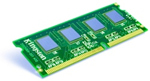

We refer to a collection of data stored in a computer system as a 'file'. Files are often organised into 'folders'.
Whenever you click 'Save' in an application, burn files to a CD-R, copy music onto your MP3 player, or drag and drop a file onto memory stick, you are using storage devices - devices that can store and retrieve data.
Serial / Sequential Access
A serial (or sequential) access storage device is one that stores files one-by-one in a sequence.
A non-computer serial access device that will be familiar to you is a VHS videotape. Because video is stored on a long piece of tape, when TV shows are recorded onto the tape, they go on one-by-one, in order...

If you want to watch a show that you recorded earlier, you have to rewind / fast-forward through all other shows until you find it.
The shows are only accessible in the same order that you recorded them. This type of one-by-one storage and access is called serial access.
Random Access
A direct (or 'random') access storage device is one that stores files so that they can be instantly accessed - there is no need to search through other files to get to the one you want.
An example of a direct access device would be a DVD movie. Unlike the VHS videotape movie, you can jump to any scene on a DVD.
All parts of the DVD are directly accessible. This type of file storage is called direct access.